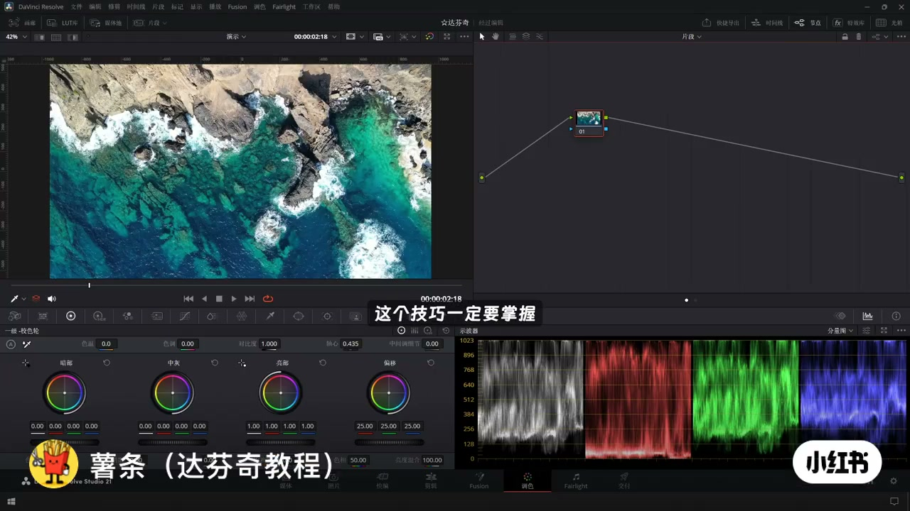
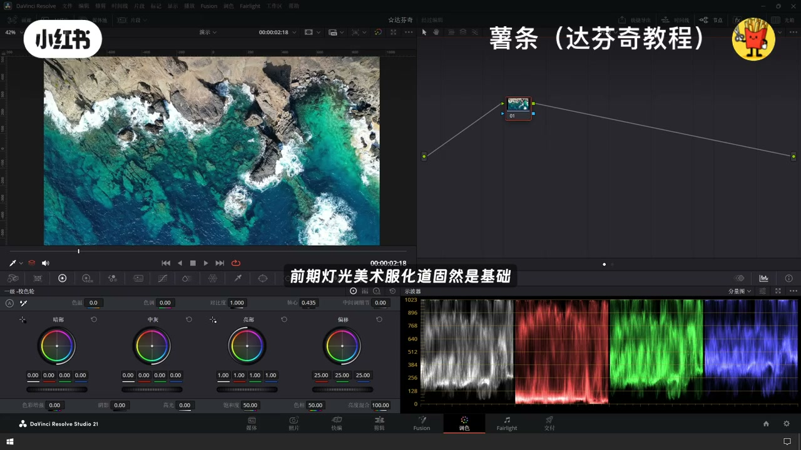
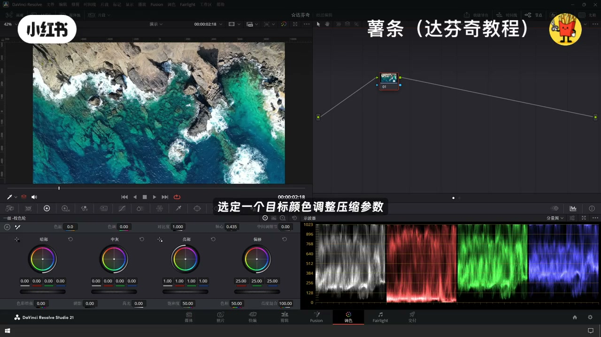
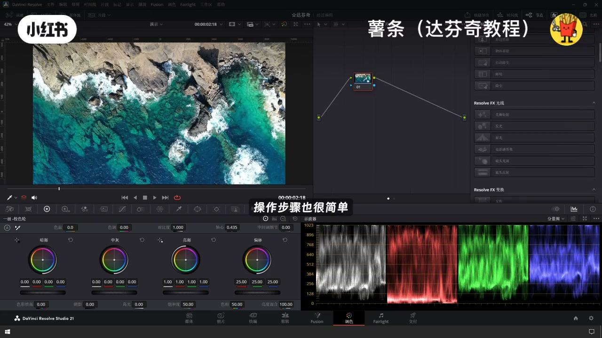
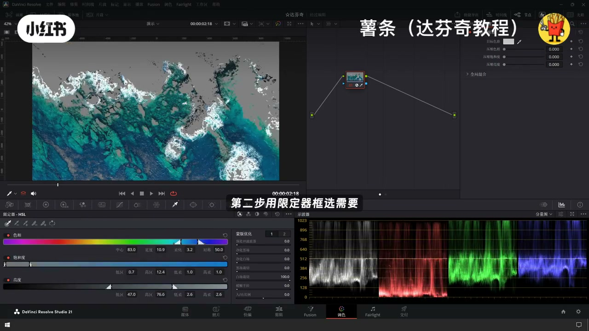
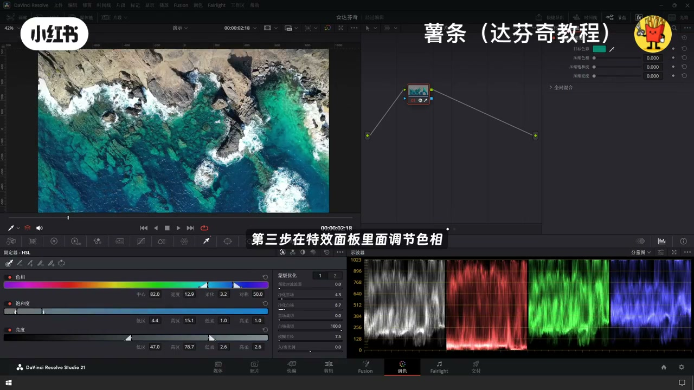

内容要点
「达芬奇调色干货｜色彩归拢一键告别画面脏杂」教程要点：想调出电影感画面 → 色彩归笼这个技巧一定要掌握 → 很多人好奇为什么院线大片的画面色调干净又统一 → 前期灯光、美术、浮华道固然是基础…
知识结构
想调出电影感画面
让整体的色调和谐统一
第一步
- 想调出电影感画面
- 色彩归笼这个技巧一定要掌握
- 很多人好奇为什么院线大片的画面色调干净又统一
- 前期灯光、美术、浮华道固然是基础
- 但是后期调色里面的色彩归笼
想调出电影感画面
00:00–00:20想调出电影感画面
想调出电影感画面；色彩归笼这个技巧一定要掌握；很多人好奇为什么院线大片的画面色调干净又统一；前期灯光、美术、浮华道固然是基础；但是后期调色里面的色彩归笼；才是理顺画面杂乱色彩的关键；简单说；色彩归笼就是收容画面里零散的杂色


00:20–00:38让整体的色调和谐统一
让整体的色调和谐统一；在达芬奇里面；用色彩压缩器就能轻松的实现；色彩压缩器的原理很好懂；选定一个目标颜色；调整压缩参数；选区里其他颜色就会向这个目标色靠拢；操作步骤也很简单
00:37–00:53第一步
第一步；在特效库里面找到色彩压缩器；拖动到节点上；第二步；用限定器框选需要处理做色彩归笼的区域；第三步；在特效面板里面调节色相饱和度亮度参数；完成色彩归笼




口述/画面要点（24段）
结合 Whisper medium 与画面大字整理；专有名词已校对。
想调出电影感画面
色彩归笼这个技巧一定要掌握
很多人好奇为什么院线大片的画面色调干净又统一
前期灯光、美术、浮华道固然是基础
但是后期调色里面的色彩归笼
才是理顺画面杂乱色彩的关键
简单说
色彩归笼就是收容画面里零散的杂色
让整体的色调和谐统一
在达芬奇里面
用色彩压缩器就能轻松的实现
色彩压缩器的原理很好懂
选定一个目标颜色
调整压缩参数
选区里其他颜色就会向这个目标色靠拢
操作步骤也很简单
第一步
在特效库里面找到色彩压缩器
拖动到节点上
第二步
用限定器框选需要处理做色彩归笼的区域
第三步
在特效面板里面调节色相饱和度亮度参数
完成色彩归笼